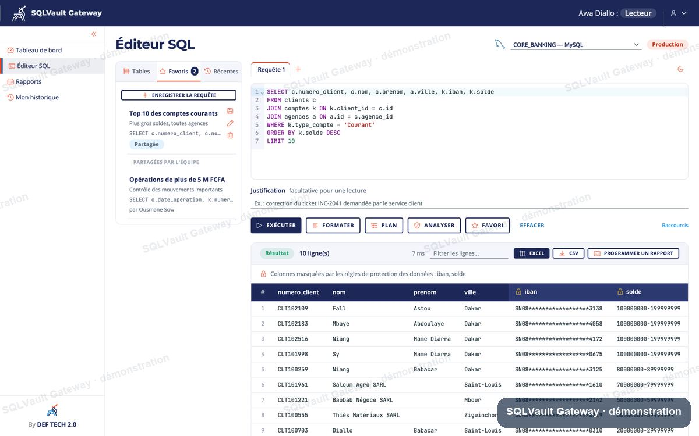

Des accès directs à la production
Analystes, développeurs et prestataires se connectent aux bases avec des outils installés sur leur poste. Chacun voit tout, y compris les numéros de compte et de carte.
Accès sécurisé aux bases de données bancaires
SQLVault Gateway est le point de passage unique et contrôlé entre vos équipes et les bases de données de la banque. Chacun ne voit que ce dont il a besoin, aucune modification ne part sans double validation, et chaque accès laisse une trace impossible à effacer.

Compatible avec vos bases, telles qu'elles sont
Le constat
Analystes, développeurs et prestataires se connectent aux bases avec des outils installés sur leur poste. Chacun voit tout, y compris les numéros de compte et de carte.
Une correction urgente, un oubli de condition, et des milliers de lignes sont modifiées en production, sans que personne ne l'ait validé.
Lors d'un audit ou d'une inspection, il est long, voire impossible, de dire avec certitude qui a consulté quoi, quand et depuis quel poste.
Avant / après
La solution
Les informations sensibles (IBAN, cartes, soldes, coordonnées) sont masquées automatiquement selon la fonction de la personne, jusque dans les exports Excel. Neuf modes de masquage, dont le format carte bancaire PCI DSS.
Toute correction de données devient une demande justifiée, approuvée par une deuxième personne avant d'être exécutée. Personne ne valide sa propre demande.
Suppression de table, modification sans condition, requêtes multiples, motif d'injection : la requête est bloquée avant d'atteindre la base, avec un motif clair et une alerte de sécurité.
Les extractions envoyées à la main sont remplacées par des rapports Excel planifiés, validés par un responsable, toujours masqués, et téléchargeables par les collègues autorisés.
Chaque accès est inscrit dans un journal d'audit signé et chaîné : qui, quoi, quand, depuis quel poste, avec quel rôle. Une seule ligne retouchée est détectée.
Autocomplétion, explorateur de tables, plan d'exécution, favoris partagés, exports : vos équipes gardent leur confort de travail, sans client SQL sur les postes.
Fonctionnement
La requête est lue avant d'atteindre la base. Les opérations interdites sont bloquées.
Une lecture s'exécute aussitôt. Une modification part en double validation.
Les colonnes sensibles sont masquées dans le résultat, selon le rôle de la personne.
La requête, acceptée ou refusée, est inscrite dans le journal d'audit chaîné.
Démonstration
Une présentation d'une minute et demie, tournée sur la Banque Téranga, une banque fictive de démonstration.
Pour qui
Un risque opérationnel et réputationnel maîtrisé, démontrable aux régulateurs et aux auditeurs.
Un seul chemin d'accès aux bases, sans client SQL à maintenir sur les postes, déployé en conteneur Docker.
Masquage piloté par la sécurité, alertes en temps réel, revue des habilitations exportable en Excel.
Des données utiles, des rapports qui arrivent seuls, et un historique complet consultable en quelques clics.
Sécurité et déploiement
SQLVault Gateway s'installe sur un serveur de la banque. Les postes y accèdent en HTTPS, depuis un simple navigateur. Les bases ne sont plus ouvertes qu'au serveur SQLVault Gateway, avec des comptes techniques à droits limités.
Lire la note de déploiement DSI / RSSI →Pilote
Une équipe de la banque utilise SQLVault Gateway sur une base de recette. Aucune donnée de production, aucun outil actuel coupé.
Serveur, bases de recette, rôles, règles de masquage validées par le RSSI.
Utilisateurs et administrateurs formés, premiers accès, premières demandes.
Les équipes travaillent dans l'outil ; le RSSI déroule son scénario de test.
Critères mesurés, restauration testée, recommandation remise. La banque décide.
Documents
Questions fréquentes
Non. Un navigateur récent suffit. SQLVault Gateway est installé sur un serveur de la banque et s'utilise en HTTPS.
Non. L'outil est hébergé dans votre infrastructure, et DEF TECH n'a pas besoin d'accéder à vos données, y compris pendant le pilote.
Oracle, SQL Server, PostgreSQL, MySQL et MariaDB, avec ou sans chiffrement TLS. Le même écran et les mêmes règles servent pour toutes.
L'analyse et le masquage ajoutent quelques millisecondes. Les grands résultats sont lus en flux, et l'export complet est produit côté serveur.
Les évolutions de structure et l'accès d'urgence passent par des circuits dédiés et tracés (bastion, coffre-fort à mots de passe). La note DSI / RSSI décrit le dispositif complet.
Quatre semaines sur une base de recette, avec 5 à 10 utilisateurs et des critères de réussite fixés dès le premier jour avec votre DSI et votre RSSI.
Démonstration en ligne de 30 minutes ou pilote de 4 semaines sur votre propre environnement : écrivez-nous, nous vous répondons rapidement.